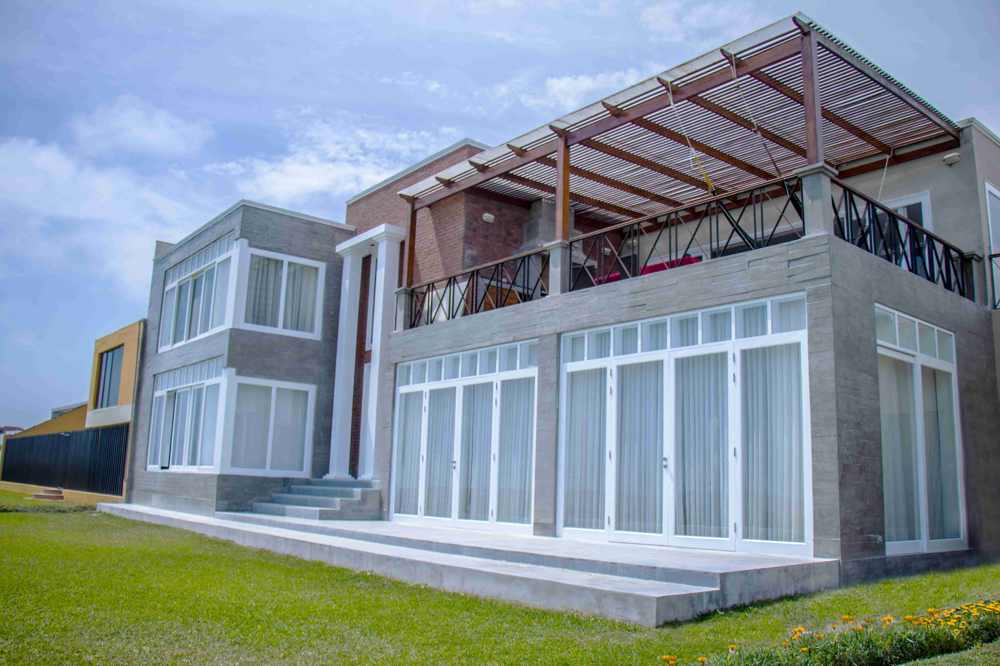
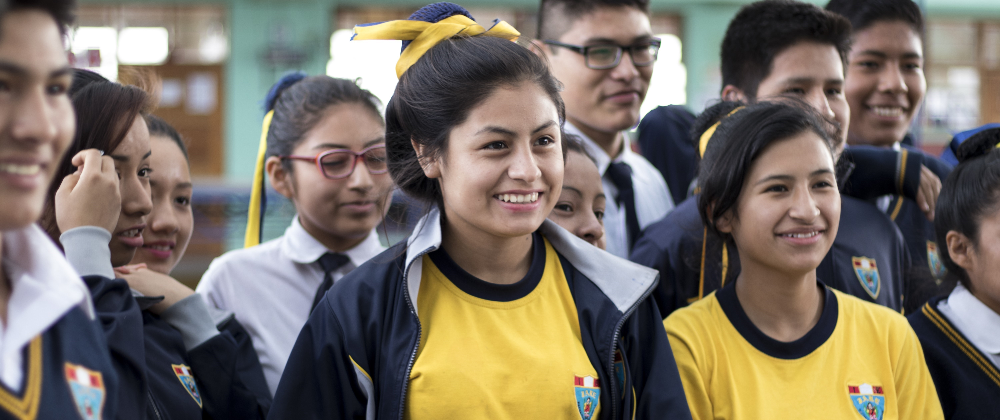
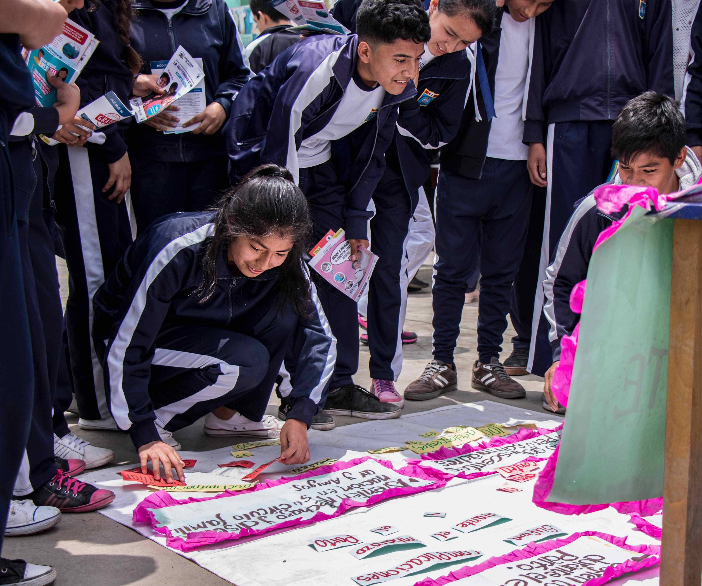
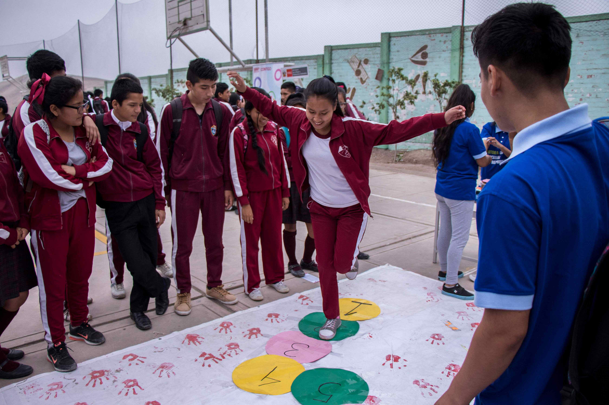
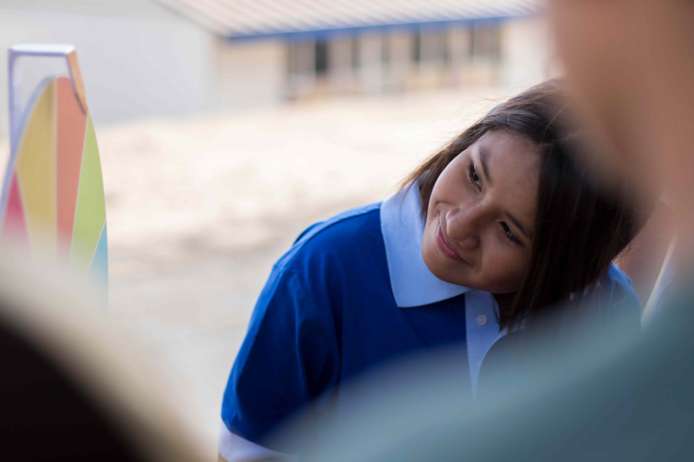

01
NARRATIVAS PERSONALES
Retratos pensados para destacar tu perfil profesional y marca personal.
Retratos pensados según tu rubro, estilo y personalidad.
NARRATIVAS PERSONALES
02
NARRATIVAS CREATIVAS
Sesión experimental - Olas violetas
Fotografía de Producto




NARRATIVAS CREATIVAS
03
NARRATIVAS SOCIALES




NARRATIVAS SOCIALES